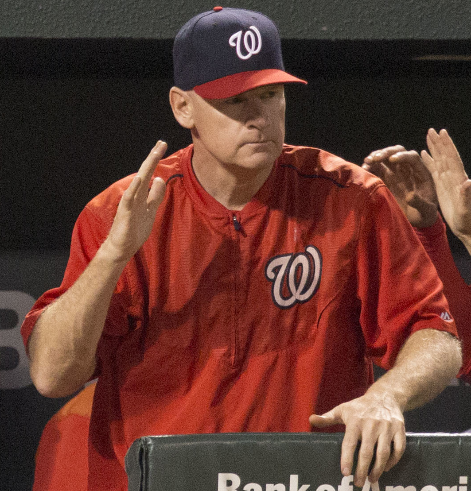

Matt Williams
The Big Marine at third, 43 bombs when the lights went out in 1994, and the Giant I still can't believe we traded.
The Matt Williams Story
Before he was Matt the Bat, he was a kid from Carson City who played quarterback in high school. The Mets took him in the 27th round in 1983 and he said no thanks. He went to UNLV instead, played three seasons for the Rebels from 1984 to 1986, and hit 58 home runs with 217 RBI and a .327 average. He left as a first team All American, and UNLV put him in its athletics hall of fame in 1997.
The Giants grabbed him third overall in the June 1986 draft. I remember thinking a guy picked that high should be in the big leagues right away, and he kind of was. He got the call when Jose Uribe went down, debuted at Dodger Stadium on April 11, 1987, and got his first big league hit off Orel Hershiser. Then he hit .188 that year. Ouch.
The next couple of years were rough on him, and the Giants didn't exactly handle it gently. He got shuttled back and forth to Triple A Phoenix over and over. Al Rosen, the GM doing the shuttling, later said flat out he wasn't proud of how they'd handled him. In 1989 Williams opened the year as the starting third baseman, hit .130, and got sent down again in early May. He went to Phoenix and hit .320 with 26 homers in 76 games, came back in July, and he was never a minor leaguer again.
That August he hit a grand slam and a two run homer off Tim Belcher in one night at Candlestick, six RBI against the Dodgers, which is the correct team to do that to. He finished 1989 with 18 homers in 84 games, then drove in nine runs in the NLCS against the Cubs. The Giants went to the World Series for the first time since 1962. You know how that one ended. He still homered off Dave Stewart in Game 3, the first game back after the earthquake.
1990 is when he became a star. Roger Craig handed him third base for good and Williams hit 33 homers and led the National League with 122 RBI. First All Star team, first Silver Slugger. He won his first Gold Glove in 1991, and if you never saw him play third, picture a big guy with soft hands and a strong, accurate arm who made the hard play look boring. He'd add Gold Gloves in 1993 and 1994 too.
Then Barry Bonds showed up in 1993 and Williams batted right ahead of him. 38 homers, 110 RBI, a .294 average, and the Giants won 103 games and somehow didn't make the playoffs. I'm still mad about it. He hit two homers in Cincinnati on September 19 with the Giants three back of Atlanta, and they kept pushing all the way to the last day of the season.
And 1994. He had 43 home runs when the Giants played their last game on August 10, and that was it, the strike killed the rest of the year. 43 in 112 games. Every one of us was doing the math on Roger Maris every morning that summer, and then there was nothing left to do the math on. He finished second in the MVP voting to Jeff Bagwell. In 1995 he fouled a ball off his foot on June 3 and broke it, so he only played 76 games, but he hit .336 in them. In 1996 he hit .302 with 22 homers in 105 games.
On November 13, 1996, new GM Brian Sabean traded him to Cleveland with Trenidad Hubbard for Jeff Kent, Julian Tavarez, Jose Vizcaino and Joe Roa. People were furious. I was furious. I'll admit Kent turned it into one of the best trades in team history, and I'll also admit I've never totally forgiven it. Williams hit 32 homers for Cleveland in 1997, won a Gold Glove and a Silver Slugger in the American League, and played in another World Series.
His marriage was ending that year and he wanted to be near his kids in Arizona, so he asked out of Cleveland, and on December 1, 1997 the Indians sent him to the brand new Diamondbacks. He drove in 142 runs for them in 1999, a club record, and in 2001 he finally got his ring. He homered in Game 2 of that World Series against the Yankees, which made him a guy who'd gone deep in a World Series for three different teams. He played his last game on May 31, 2003, and retired with 378 homers and 1,218 RBI.
The ugly part has to be said too. In December 2007 he was named in the Mitchell Report, which said he'd bought human growth hormone in 2002. Williams said he used it on a doctor's advice while recovering from a bad ankle injury he suffered that spring. I'm not going to pretend that didn't happen. It's on his record, and his Hall of Fame vote went nowhere, just 1.3 percent in 2009.
Then he became a lifer on the other side of the chalk. He coached first and third for Arizona from 2010 to 2013, and the Nationals hired him to manage for 2014. He won 96 games, took the NL East, and was named National League Manager of the Year, and then his Nationals ran into the Giants in the Division Series and lost. Sorry, Matt. Washington let him go after 2015. He coached third for Oakland in 2018 and 2019, managed the Kia Tigers in Korea in 2020 and 2021, then coached third for San Diego and went through surgery for colon cancer in 2023.
For 2024 Bob Melvin brought him home as the Giants' third base coach, and seeing him waving guys around third in orange and black again got me a little choked up, I'm not ashamed to say it. He coached third for two seasons and said he wouldn't be back after the Giants let Melvin go in September 2025. In 2026 he took over the San Francisco Firebells in the first season of the Women's Pro Baseball League, and they had the best regular season record before losing the championship series in five games. His Wall of Fame plaque has been out on King Street since 2008, and he's in the Bay Area Sports Hall of Fame too.
What He Meant to Us
If you could build a time capsule of what a ballplayer was supposed to look like, you'd put Matt Williams in it. Very old school, very hard nosed. Lots of power, a big right handed bat in the middle of the order and a great glove and a cannon at third base. He was one of the guys you grew up loving in the late 80s and early 90s, and that's why he belongs in here.
He did not like people showing emotion on the field. If a pitcher struck somebody out and started celebrating, Matt took that as showing a guy up, and I remember him letting pitchers hear about it more than once. He played the game the way it was played thirty years before he got there, and he expected everybody else to do the same.
Then there was 1994. He had 43 homers in 112 games when the strike shut everything down in August. That pace puts you right around Roger Maris's 61, and I always wanted to see how it ended. Honestly, I don't think he would have broken the record, but we'll never know, and that still bugs me. And it's no accident it happened when Barry Bonds was hitting next to him. Once Bonds came to town, Matt turned into another animal.
When the Giants traded him to Cleveland in November 1996, we were outraged. Outraged. Our third baseman, gone. But it turned out to be a great trade for the Giants, and a good one for the Indians too, since Matt helped them get to the World Series the next year. We got Jeff Kent, Jose Vizcaino and Julian Tavarez, plus Joe Roa, and those guys were heroes for us.
The 1996 Giants went 68 and 94 and finished last. The 1997 Giants went 90 and 72 and won the West. Worst to first. Do you believe in miracles? I was all in on that team. Kent went on to win an MVP here in 2000. So the trade that broke my heart turned into one of the best things that ever happened to the franchise. I still loved Matt Williams, though. Always will.
Why He Was Clutch
Matt Williams in October was a streaky guy, and I won't lie to you about that. In 1989 he was huge against the Cubs, nine RBI in five games, and then he got two hits in four World Series games against Oakland. In 2001 he was cold all through the first two rounds before he hit the homer that basically won Game 2. If you want a guy who hit .400 every October, look somewhere else.
But the swings that mattered most, he took them. Game 4 of the 1989 NLCS, tied at 4 at Candlestick, and he puts one out off Steve Wilson with Will Clark aboard to make it 6 to 4. The Giants were a game from the pennant after that. He'd already driven in two off Greg Maddux earlier that night. Four RBI in a game they had to have.
And 1994 still gets me. He hit his 39th and 40th on the last day of July against Colorado, then hit number 43 off Willie Banks at Wrigley on August 10, in the last game the Giants played that year. He was chasing a record that had stood since 1961, and he never got to finish. Nobody gets to call that a choke. It's the biggest what if in Giants history that doesn't involve a line drive and Bobby Richardson's glove.
What I loved is that he never looked any different when it got loud. Same stance, same glare. That's who I wanted up there.
Clutch Moments
- August 11, 1989
Grand slam and six RBI against the Dodgers
Back from Phoenix, Williams hit a first inning grand slam off Tim Belcher at Candlestick, then took Belcher deep again for two more in the third. Six RBI, a 10 to 2 rout of Los Angeles, and the start of the guy we'd watch for the next seven years.
- October 8, 1989
The tie breaking homer in Game 4 of the NLCS
With Game 4 against the Cubs tied at 4 at Candlestick, Williams hit a two run homer off Steve Wilson in the fifth. He'd already singled home two runs off Greg Maddux in the third. The Giants won 6 to 4 to take a three games to one lead, and they clinched the pennant the next day. He finished that NLCS with two homers and nine RBI.
- October 27, 1989
A World Series homer after the earthquake
Ten days after the Loma Prieta earthquake stopped the World Series, Game 3 finally got played at Candlestick and Williams hit a solo homer off Dave Stewart in the second inning. Oakland won 13 to 7 and finished the sweep the next night, but that homer was the first of the three World Series teams he'd go deep for.
- September 19, 1993
Two homers in Cincinnati in the pennant race
With the Giants three games behind Atlanta, Williams hit a three run homer off Bobby Ayala in the fourth and a two run shot off Scott Service in the eighth at Riverfront Stadium. Five RBI in a 7 to 3 win, numbers 36 and 37 on the year. The Giants won 103 games and still finished one back.
- July 31, 1994
Numbers 39 and 40 against the Rockies
Williams drove in five against Colorado at Candlestick, with a three run homer off Mark Thompson in the fourth and a solo shot off Jim Czajkowski in the fifth. That put him at 40 home runs on the last day of July in a 9 to 4 Giants win, and the Maris talk got real.
- August 10, 1994
Number 43, the last swing before the strike
At Wrigley Field, Williams homered off Willie Banks in the second inning for his league leading 43rd, then doubled home two more in the third. The Giants won 5 to 2. It was their last game of the season, because the players' strike began two days later and wiped out the rest of the year and the World Series.
- October 28, 2001
The three run homer off Andy Pettitte
In Game 2 of the World Series in Phoenix, with Arizona up 1 to 0 in the seventh, Williams hit a three run homer off Andy Pettitte. Randy Johnson took it from there and the Diamondbacks won 4 to 0. A week later Arizona beat the Yankees in Game 7 and Williams had his ring.
The Highlights
What They Said About Williams
“We did things out of dire necessity, and were not in his best interests. Because Matt has a great makeup and tremendous determination, he was able to handle it. I’m not proud of the way we handled him.”
“In our view, this is an old-time baseball deal. We gave them a four-time All-Star, and we are really excited about the return”
“He is a very family-oriented person. You see him with his kids, and his eyes light up and it’s real obvious he adores them.”
“If I was going to score the winning run, Matty had to be the first guy there.”
“I’m a huge Matt Williams fan. There were a lot of people through the course of the season who were ready to give up on him, but I was never one of them.”
“Matt Williams is definitely someone who helped me out so much in 2018 and 2019 when he was in Oakland. Just from a guy who’s been in my shoes, somebody who’s done it. We have a lot of similarities.”
Career Stats
| Year | Team | G | AB | R | H | 2B | 3B | HR | RBI | SB | BB | AVG | OBP | SLG | OPS |
|---|---|---|---|---|---|---|---|---|---|---|---|---|---|---|---|
| 1987 | SF | 84 | 245 | 28 | 46 | 9 | 2 | 8 | 21 | 4 | 16 | .188 | .240 | .339 | .579 |
| 1988 | SF | 52 | 156 | 17 | 32 | 6 | 1 | 8 | 19 | 0 | 8 | .205 | .251 | .410 | .661 |
| 1989 | SF | 84 | 292 | 31 | 59 | 18 | 1 | 18 | 50 | 1 | 14 | .202 | .242 | .455 | .697 |
| 1990 | SF | 159 | 617 | 87 | 171 | 27 | 2 | 33 | 122 | 7 | 33 | .277 | .319 | .488 | .807 |
| 1991 | SF | 157 | 589 | 72 | 158 | 24 | 5 | 34 | 98 | 5 | 33 | .268 | .310 | .499 | .809 |
| 1992 | SF | 146 | 529 | 58 | 120 | 13 | 5 | 20 | 66 | 7 | 39 | .227 | .286 | .384 | .670 |
| 1993 | SF | 145 | 579 | 105 | 170 | 33 | 4 | 38 | 110 | 1 | 27 | .294 | .325 | .561 | .886 |
| 1994 | SF | 112 | 445 | 74 | 119 | 16 | 3 | 43 | 96 | 1 | 33 | .267 | .319 | .607 | .926 |
| 1995 | SF | 76 | 283 | 53 | 95 | 17 | 1 | 23 | 65 | 2 | 30 | .336 | .399 | .647 | 1.046 |
| 1996 | SF | 105 | 404 | 69 | 122 | 16 | 1 | 22 | 85 | 1 | 39 | .302 | .367 | .510 | .877 |
| 1997 | CLE | 151 | 596 | 86 | 157 | 32 | 3 | 32 | 105 | 12 | 34 | .263 | .307 | .488 | .795 |
| 1998 | ARI | 135 | 510 | 72 | 136 | 26 | 1 | 20 | 71 | 5 | 43 | .267 | .327 | .439 | .766 |
| 1999 | ARI | 154 | 627 | 98 | 190 | 37 | 2 | 35 | 142 | 2 | 41 | .303 | .344 | .536 | .880 |
| 2000 | ARI | 96 | 371 | 43 | 102 | 18 | 2 | 12 | 47 | 1 | 20 | .275 | .315 | .431 | .746 |
| 2001 | ARI | 106 | 408 | 58 | 112 | 30 | 0 | 16 | 65 | 1 | 22 | .275 | .314 | .466 | .780 |
| 2002 | ARI | 60 | 215 | 29 | 56 | 7 | 2 | 12 | 40 | 3 | 21 | .260 | .324 | .479 | .803 |
| 2003 | ARI | 44 | 134 | 17 | 33 | 9 | 0 | 4 | 16 | 0 | 16 | .246 | .327 | .403 | .730 |
| Career | 1866 | 7000 | 997 | 1878 | 338 | 35 | 378 | 1218 | 53 | 469 | .268 | .317 | .489 | .806 |
Regular season. Highlighted rows are his Bay Area seasons. Scroll the table sideways on a phone.